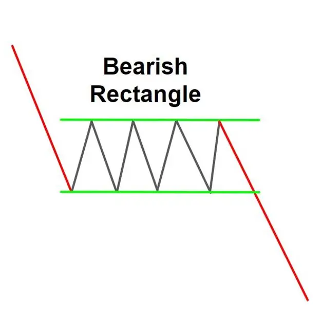
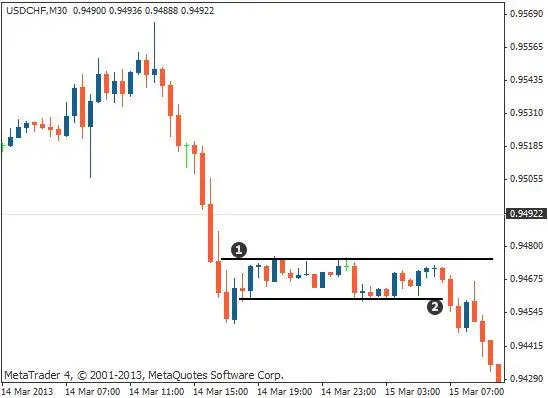

Bearish rectangle pattern is a trend continuation chart pattern of a downtrend,
formed by a temporary consolidation between two down movements. This pattern typically
appears as a rectangle, thus the name.
The bearish rectangle pattern signals a strong downtrend, and traders often use it as an
opportunity for trading. To enter the pattern, traders usually look to break the lower support
level of the rectangle.
The height of the rectangle is the distance between the rectangle's edges. The width of the
rectangle is the distance of the time duration across both sides of the rectangle.
The bearish rectangle pattern is not a reliable trading pattern, but it indicates a strong
downtrend and traders generally use it as an opportunity for trading.
